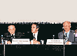
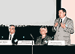
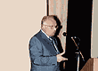
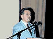
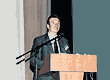
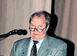
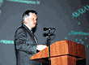

МЕЖДУНАРОДНАЯ КОНФЕРЕНЦИЯ МАКМАX/ISC
«ХИРУРГИЧЕСКИЕ ИНФЕКЦИИ: ПРОФИЛАКТИКА И ЛЕЧЕНИЕ»
29-30 мая 2003 г. в Москве в Большом концертном зале гостиницы «Космос» состоялась Международная конференция МАКМАХ «Хирургические инфекции: профилактика и лечение». Конференция прошла в рамках проекта «Disease Management Series» и организована в России МАКМАХ совместно с Международным обществом по химиотерапии (ISC) под эгидой Минздрава РФ, Российской академии медицинских наук, Всероссийского научного медицинского общества хирургов.
Участники конференции

Интерес к конференции со стороны хирургов и специалистов в области хирургических инфекций был исключительно высоким. В научных заседаниях приняли участие более 1200 человек из 170 городов России, стран ближнего и дальнего зарубежья - Беларуси, Молдавии, Украины, Казахстана, Киргизии, Узбекистана, Украины, а также Австрии, Болгарии, Германии, Израиля, Польши, Сербии, Кореи. Более 240 (30%) участников из 30 медицинских учреждений Москвы и Московской области посетили конференцию. Основная часть аудитории представлена хирургами различных специальностей (сосудистые хирурги, торакальные, абдоминальные, урологи, гинекологи, детские хирурги, травматологи) (48,8%), бактериологами (14,2%), терапевтами (12,2%), анестезиологами-реаниматологами (9,2%) и эпидемиологами (5%). Большое количество интернов, ординаторов и аспирантов клинических кафедр посетили конференцию (10,6%).
Впервые на конференции проводилась регистрация на сайте и электронная регистрация на месте.
Церемония открытия

На церемонии открытия c приветственным словом выступили Президент РАМН, Академик РАМН В.И. Покровский и Начальник управления научно-исследовательских медицинских учреждений Минздрава России С.Б. Ткаченко.

Перед участниками и гостями конференции выступил лауреат Международных и Всероссийских конкурсов, стипендиат Международного благотворительного фонда В. Спивакова И. Петров (балалайка).
Научные заседания
В первый день конференции основное внимание уделялось возбудителям хирургических инфекций, профилактике инфекционных осложнений и ведению пациентов с тяжёлыми перитонитами, панкреатитами, нозокомиальной пневмонией.

Большое внимание аудитории привлёк специальный симпозиум «Атипичная пневмония» (SARS), состоявшийся в заключение первого дня конференции. На симпозиуме выступили главный инфекционист Минздрава России академик РАМН В.В. Малеев, президент ISC Ж.К. Пешере и профессор П. Тамбья из Сингапура.
В рамках конференции, 29 мая состоялся специальный симпозиум, организованный компанией Aventis «Роль левофлоксацина (Таваник) в терапии хирургических инфекций».
Основные научные направления второго дня были посвящены антибактериальной профилактике хирургических инфекций, ведению пациентов с тяжёлыми хирургическими инфекциями, травмой, ожогами и отморожениями, инфекциями в урологии. Отдельный симпозиум был посвящён новым антимикробным препаратам для лечения хирургических инфекций.
Всего за 2 дня конференции прозвучали 27 докладов, 15 из которых представлены иностранными докладчиками и 12 - российскими. Во время всех научных заседаний был обеспечен синхронный перевод выступлений и слайдов.

Важным событием следует считать обсуждение проекта международных рекомендаций «Политика применения антибиотиков в хирургии. 2003», инициатива создания которых принадлежит МАКМАХ. Во время обсуждения, участниками конференции были высказаны важные дополнения, которые будут учтены при подготовке окончательной версии рекомендаций.
Стендовая сессия
В этом году на рассмотрение Научного комитета было прислано рекордное, по сравнению с предыдущими конференциями, количество работ - 409. К публикации в специальном приложении к журналу «Клиническая микробиология и антимикробная химиотерапия» (КМАХ) принято 21,2% публикаций.

Стендовая сессия с участием авторов принятых работ состоялась 29 мая. Стендовая комиссия в составе профессоров Н.А. Зубаревой, М.Н. Зубкова, Г.К. Решедько под председательствованием профессора К. Набера выбрала три наиболее интересные работы. Победителями стали Э.А. Мардганиева, Уфа «Факторы риска вентилятор-ассоциированной пневмонии при хирургическом сепсисе у детей», А.С. Базаров, Москва «Рутинная практика периоперационного назначения антибиотиков при абдоминальных операциях в России: результаты многоцентрового исследования» и Н.В. Власова, Краснодар «Роль инвазивных методов в диагностике и лечении плевритов». Победители были награждены бесплатной годовой подпиской на журнал International Journal of Antimicrobial Agents, членством в ESCMID и бесплатной годовой подпиской на журнал КМАХ.
Спонсоры
Генеральными спонсорами конференции стали фармацевтические компании MSD, Pfizer, AstraZeneca, поддержку в организации конференции оказали фармацевтические компании Lek, Dr. Reddy's, Aventis, Bayer, Bristol-Mayers Squibb, а также bioMérieux, KRKA, Ranbaxy, Abolmed и Нижфарм.
VII международная конференция МАКМАХ
VII международная конференция МАКМАХ состоится летом 2005 г. в Москве. Конференция будет организована совместно с Европейским обществом по клинической микробиологии и инфекционным болезням (ESCMID). Тематика конференции будет анонсирована позднее на сайте ANTIBIOTIC.ru.

МАКМАХ и ESCMID будут рады получить ваши предложения по тематике будущей конференции и ее организации.
Фотографии с конференции
(выберите картинку для просмотра увеличенного изображения):
| Иностранные докладчики |

| Э. Акалин |
|

| П. Аппельбаум |

| Дж. Гарбино |
|

| П. Деллинджер |

| Д. Корналиа |
|

| Ф. Монтраверс |

| К. Набер |
|

| А. Родлофф |

| Ж.К. Пешере |
|

| П.А. Тамбья |

| А. Эльдад |
|
| Российские докладчики |

| В.Б. Белобородов |
|

| Б.Р. Гельфанд |

| Е.К. Гуманенко |
|

| А.В. Дехнич |

| Н.А. Ефименко |
|

| И.А. Ерюхин |

| Н.Н. Климко |
|

| Р.С. Козлов |

| К.В. Липатов |
|

| В.В. Малеев |

| В.Г. Плешков |
|
| В.А. Руднов |

| А.М. Светухин |
|

| Л.С. Страчунский |

| С.В. Яковлев |
|
| Сессия стендовых докладов |

| |

| |
| Стенд МАКМАХ и НИИ АХ |

|
|
| Спонсоры конференции |

| MSD |
|

| Pfizer |

| AstraZeneca |
|

| bioMérieux |

| KRKA |
|

| НижФарм |
22855
МАКМАХ, ISC, конференция, хирургические, инфекции, профилактика, лечение |


")